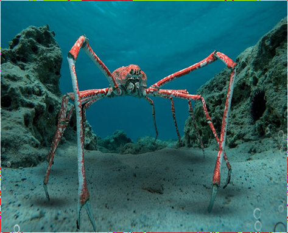

СЕМЕЙСТВА Inachidae
ГЛУБИНА:от 50 до 800 метров
КОГДА ОТКРЫЛИ:в 1836 году
ТИП ПИТАНИЯ:Он не является активным хищником, а собирает разлагающуюся органику, моллюсков, водоросли, мелкую рыбу и мертвых животных, используя клешни для дробления пищи
ПОВЕДЕНИЕ:Образ жизни: Ведет спокойный, одиночный образ жизни, ползая по морскому дну; плавать не умеет.
Маскировка: Молодые особи (иногда взрослые) маскируются, украшая панцирь водорослями или мелкими камнями для защиты от врагов (осьминогов).
Активность: Дневное время проводят в пассивном состоянии, а ночью становятся активнее.
Линька: Регулярно сбрасывают панцирь, с каждой линькой увеличиваясь в размерах.
Социальность: Слабо развита, ведут одиночный образ жизни.
